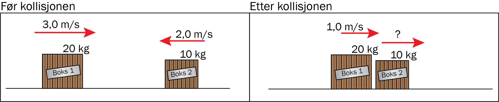
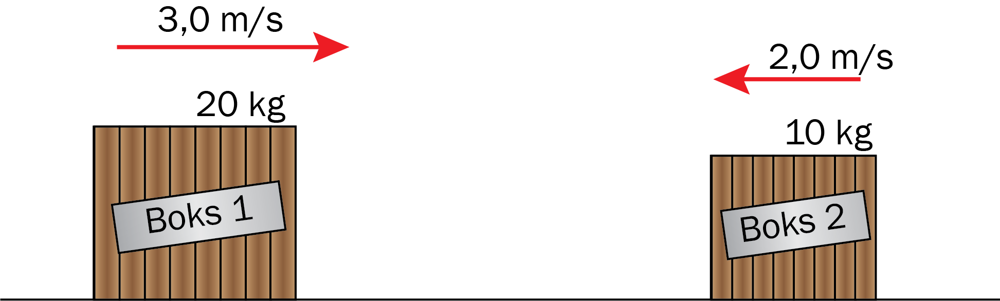

Bevegelsesmengde og støt
Du skal ha kompetanse om
- bevaringsloven for bevegelsesmengde \(p_{\text{før}} = p_{\text{etter}}\)
- elastiske og uelastiske støt
- sammenhengen mellom krefter og bevegelsesmengde
Bevaring av bevegelsesmengde
Bevegelsesmengde \(p\) er definert som
\[ p = \text{masse} \cdot \text{fart} = mv \]I et sammenstøt er bevegelsesmengden til systemet bevart:
\[ M \cdot V_0 + m \cdot v_0 = M \cdot V + m \cdot v \]Eksempel
Bestem farten til boks 2 etter kollisjonen.

Bevaring av bevegelsesmengde gir
\[ \begin{aligned} M \cdot V_0 + m \cdot v_0 &= M \cdot V + m \cdot v \\ 20 \cdot 3\text{,}0 + 10 \cdot (-2,0) &= 20 \cdot 1\text{,}0 + 10 \cdot v \\ 40 &= 20 + 10v \\ 20 &= 10v \\ v &= 2\text{,}0 \text{ m/s (mot høyre)} \end{aligned} \]Merk: Det er viktig å ha med fortegnet til retningen i beregningene av bevegelsesmengde. Hvis farten hadde vært negativ i eksempelet over, hadde det betydd at boksen beveger seg mot venstre etter støtet.
Fullstendig uelastisk støt: Legemene som kolliderer henger sammen.
Eksempel
Bestem farten til felleslegemet etter kollisjonen når støtet er fullstendig uelastisk.

Bevaring av bevegelsesmengde gir
\[ \begin{aligned} M \cdot V_0 + m \cdot v_0 &= M \cdot V + m \cdot v \\ M \cdot V_0 + m \cdot v_0 &= (M+m)v_{\text{felles}} \\ 20 \cdot 3,0 + 10 \cdot (-2,0) &= 30v_{\text{felles}} \\ 40 &= 30v_{\text{felles}} \\ v_{\text{felles}} &= \frac{40}{30} = 1\text{,}3 \text{ m/s (mot høyre)} \end{aligned} \]I et uelastisk støt mister systemet energi, for eksempel til varme.
Eksempel
Hvor mye energi har gått tapt til varme i kollisjonen ovenfor?
Endringen av kinetisk energi blir
\[ \begin{aligned} \Delta E_k &= \frac{1}{2}(M+m)v_{\text{felles}}^2 - \frac{1}{2}MV_0^2 - \frac{1}{2}mv_0^2 \\ &= \frac{1}{2}\cdot 30 \cdot 1,333^2 - \frac{1}{2}\cdot 20 \cdot 3^2 - \frac{1}{2}\cdot 10 \cdot 2^2 \\ &= -83 \text{ J} \end{aligned} \]Det har gått tapt 83 J energi til varme.
Elastisk støt: Kinetisk energi er bevart, slik at
\[ M \cdot V_0 + m \cdot v_0 = M \cdot V + m \cdot v \;\;\; \text{og} \;\;\; \frac{1}{2}MV_0^2 + \frac{1}{2}mv_0^2 = \frac{1}{2}MV^2 + \frac{1}{2}mv^2 \]Eksempel
Bestem farten til boksene etter kollisjonen hvis støtet er elastisk.
Bevaring av både bevegelsesmengde og energi gir
\[ \begin{aligned} 20 \cdot 3\text{,}0 - 10 \cdot 2\text{,}0 &= 20V + 10v \\ \frac{1}{2}20 \cdot 3\text{,}0^2 + \frac{1}{2}10 \cdot 2\text{,}0^2 &= \frac{1}{2}20V^2 + \frac{1}{2}10v^2 \end{aligned} \]Løsningene av ligningssettet er
\[ V = 3\text{,}0 \text{ og } v = -2\text{,}0 \;\;\text{eller}\;\; V = -0\text{,}33 \text{ og } v = 4\text{,}7 \]Klossene glir ikke gjennom hverandre, så vi kan utelukke den første løsningen.
Den store klossen får farten 0,33 m/s mot venstre, og den lille får farten 4,7 m/s mot høyre.
Krefter og bevegelsesmengde
Vi kan utlede bevaringsloven for bevegelsesmengde fra Newtons 2. og 3. lov.
Når en kasse med masse \(M\) kolliderer med en kasse med masse \(m\), gir Newtons lover
\[ M a_1 = -m a_2 \]hvor \(a_1\) er akselerasjonen til massen \(M\), og \(a_2\) er akselerasjonen til massen \(m\).
Akselerasjon er endring av fart, så hvis kollisjonen varer over en tid \(t\), kan ligningen ovenfor skrives om til
\[ M \cdot \frac{V - V_0}{t} = -m \cdot \frac{v - v_0}{t} \]Ved å multiplisere med \(t\) på begge sider, og flytte leddene, får vi
\[ MV_0 + mv_0 = MV + mv \]som er bevaringsloven for bevegelsesmengde.